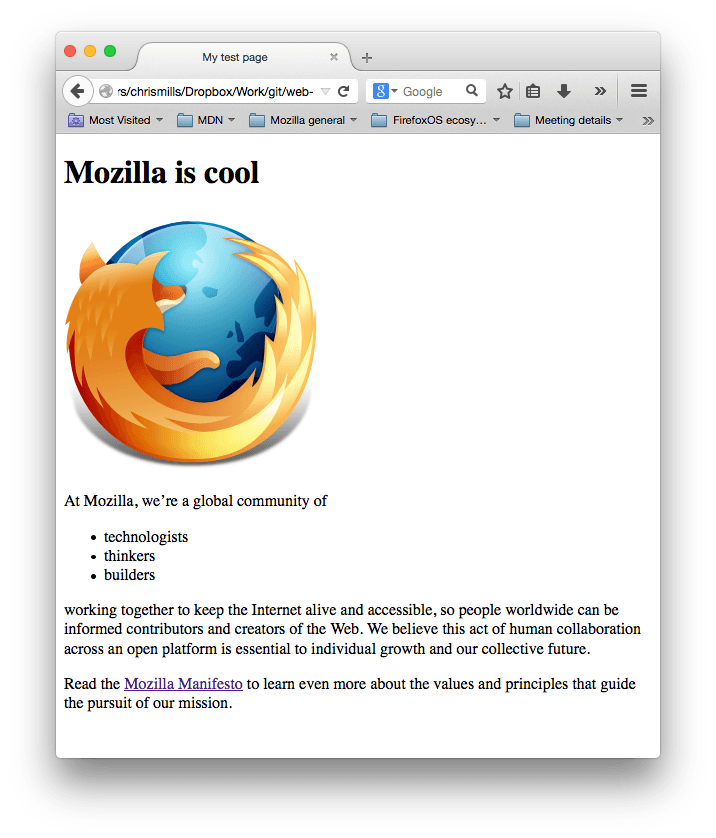

Главными частями нашего элемента являются:

Элементы также могут иметь атрибуты, которые выглядят так:

Атрибуты содержат дополнительную информацию об элементе, которую вы не хотите показывать в фактическом контенте. В данном случае, class это имя атрибута, а editor-note это значение атрибута. Класс позволяет дать элементу идентификационное имя, которое может позже использоваться, чтобы обращаться к элементу с информацией о стиле и прочих вещах.
Атрибут всегда должен иметь:
Вы также можете располагать элементы внутри других элементов — это называется вложением. Если мы хотим заявить, что наша кошка очень раздражена, мы можем заключить слово "очень" в элемент <strong> , который указывает, что слово должно быть сильно акцентированно:
<p>>Моя кошка <strong>очень</strong> раздражена.</p>
Вы, однако, должны убедиться, что ваши элементы правильно вложены: в примере выше мы открыли первым элемент <p>, затем элемент <strong>, потом мы должны закрыть сначала элемент </strong>, затем <p>
Элементы должны открываться и закрываться правильно, поэтому они явно располагаются внутри или снаружи друг друга. Если они перекрываются, как в примере выше, ваш веб-браузер будет пытаться сделать наилучшее предположение на основе того, что вы пытались сказать, что может привести к неожиданным результатам. Так что не стоит этого делать!
Некоторые элементы не имеют контента, и называются пустыми элементами. Возьмём элемент <img>, который уже имеется в нашем HTML:
<img src="images/firefox-icon.png" alt="Моё тестовое изображение">
Он содержит два атрибута, но не имеет закрывающего тега </img>, и никакого внутреннего контента. Это потому, что элемент изображения не оборачивает контент для влияния на него. Его целью является вставка изображения в HTML страницу в нужном месте.
Мы завершили изучение основ отдельных HTML элементов, но они не очень полезны сами по себе. Теперь мы посмотрим, как отдельные элементы объединяются в целую HTML страницу. Давайте вернёмся к коду, который мы записывали в наш index.html
<!DOCTYPE html>
<html>
<head>
<meta charset="utf-8">
<title>Моя тестовая страница</title>
</head>
<body>
<img src="images/firefox-icon.png" alt="Моё тестовое изображение">
</body>
</html>
<img src="images/firefox-icon.png" alt="Mоё тестовое изображение">
Как было сказано раньше, код встраивает изображение на нашу страницу в нужном месте. Это делается с помощью атрибута src (source, источник), который содержит путь к нашему файлу изображения.
Мы также включили атрибут alt (alternative, альтернатива). В этом атрибуте, вы указываете поясняющий текст для пользователей, которые не могут увидеть изображение, возможно, по следующим причинам:

Альтернативный текст - это "пояснительный текст". Он должен предоставить читателю достаточно информации, чтобы иметь представление о том, что передаёт изображение. В этом примере наш текст "My test image" ("Моё тестовое изображение") не годится. Намного лучшей альтернативой для нашего логотипа Firefox будет "The Firefox logo: a flaming fox surrounding the Earth" ("Логотип Firefox: огненный Лис вокруг Земли").
В этом разделе рассмотрим некоторые из основных HTML элементов, которые вы будете использовать для разметки текста.
Элементы заголовка позволяют вам указывать определённые части вашего контента в качестве заголовков или подзаголовков. Точно так же, как книга имеет название, названия глав и подзаголовков, HTML документ может содержать то же самое. HTML включает шесть уровней заголовков <h1> - <h6>, хотя обычно вы будете использовать не более 3-4 :
<h1>Мой главный заголовок</h1>
<h2>Мой заголовок верхнего уровня</h2>
<h3>Мой подзаголовок</h3>
<h4>Мой под-подзаголовок</h4>
Как было сказано раньше, элемент
предназначен для абзацев текста; вы будете использовать их регулярно при разметке текстового контента:
<p>>Это одиночный абзац</p>Большая часть веб-контента является списками и HTML имеет специальные элементы для них. Разметка списка всегда состоит по меньшей мере из двух элементов. Наиболее распространёнными типами списков являются нумерованные и ненумерованные списки:
Каждый пункт внутри списков располагается внутри элемента
Например, если мы хотим включить часть следующего фрагмента абзаца в список:
<p>>Mozilla, мы являемся мировым сообществом технологов, мыслителей и строителей, работающих вместе ... </p>
Мы могли бы изменить разметку на эту:
<p>Mozilla, мы являемся мировым сообществом</p>
<ul>
<li>технологов</li>
<li>мыслителей</li>
<li>строителей</li>
</ul>
<p>работающих вместе ... </p>
Ссылки очень важны — это то, что делает Интернет Интернетом. Чтобы добавить ссылку, нам нужно использовать простой элемент — <a> — a это сокращение от "anchor" ("якорь"). Чтобы текст в вашем абзаце стал ссылкой, выполните следующие действия:
Вы можете получить неожиданные результаты, если в самом начале веб-адреса вы опустите https:// или http:// часть, называемую протоколом. После создания ссылки, кликните по ней, чтобы убедиться, что она направляет вас туда, куда вы хотели.
href сначала может выглядеть довольно непонятым выбором для имени атрибута. Если у вас возникли проблемы с тем, чтобы запомнить его, можете запомнить, что атрибут href образуется как hypertext reference("гипертекстовая ссылка").
